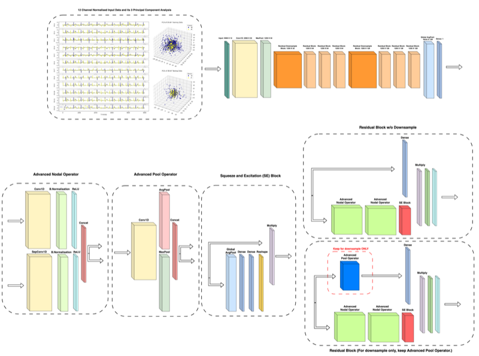
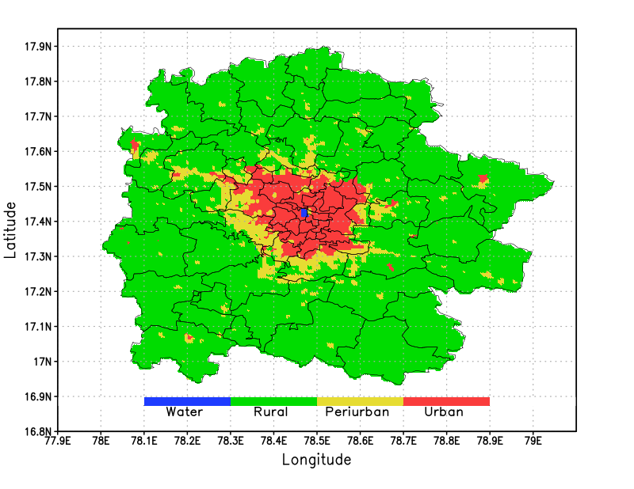
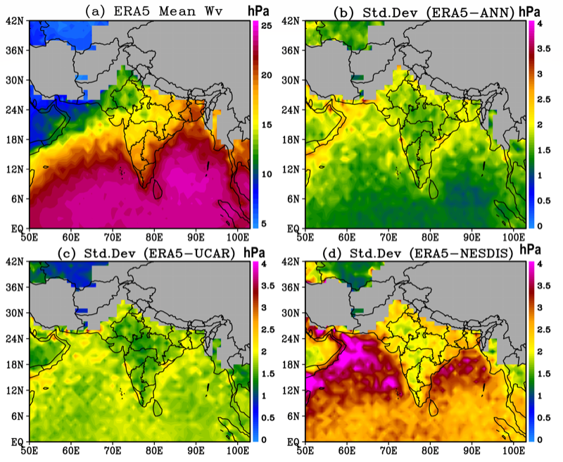

“SERN-AwGOP: Squeeze-and-Excitation Residual Network With an Attention-Weighted Generalized Operational Perceptron for Atrial Fibrillation Detection.” IEEE Access, 2025. [paper]
Soumil Hooda
Silicon Engineer at Google
My current work focuses on cache-coherent interconnect design, spanning microarchitecture definition, RTL implementation, clock-tree analysis, and power estimation.
I graduated from BITS Pilani in 2025 with a BE in Electrical and Electronics Engineering and an MSc in Physics. As an undergraduate, I worked on atmospheric water-vapor retrieval from radio-occultation measurements at the Space Applications Centre (ISRO), finger-flexion estimation from neural recordings at CSIR-CEERI, and peri-urban mapping and arrhythmia classification at BITS Pilani. This research was advised by Prof. Manik Gupta, Prof. Rajesh Tripathy, and Dr. Satya Prakash Ojha.
I previously interned at Google and Texas Instruments. At Google, I developed infrastructure to generate and integrate subsystem-level RTL from architectural configurations, including power intent, clock/reset-domain crossings, linting, and register collateral. At Texas Instruments, I developed reusable, assertion-based formal verification IP for a real-time microcontroller platform and explored graph representations of finite-state machines for GNN-based protocol analysis.

“SERN-AwGOP: Squeeze-and-Excitation Residual Network With an Attention-Weighted Generalized Operational Perceptron for Atrial Fibrillation Detection.” IEEE Access, 2025. [paper]

“Supervised Model for Peri-Urban Area Demarcation in Hyderabad, India.” IEEE Geoscience and Remote Sensing Letters, 2024. [paper]

“Retrieval of Atmospheric Water Vapor Profiles From COSMIC-2 Radio Occultation Constellation Using Machine Learning.” IEEE Transactions on Geoscience and Remote Sensing, 2023. [paper]